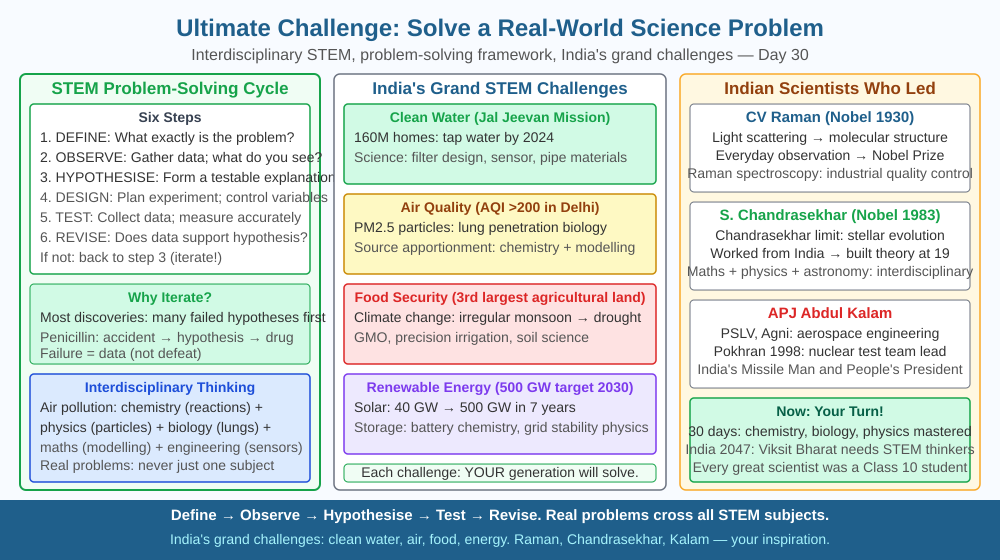

By the end of this lesson, you should be able to explain why a solar panel generates electricity using the photoelectric effect, apply E = hf to explain why sunlight (but not infrared) frees electrons from silicon, describe how a p-n junction converts this to usable current, and predict why power output falls on a cloudy day.
A flat silicon panel sitting on a rooftop quietly converts sunlight into electricity — no moving parts, no fuel, no combustion. India has installed over 80 GW of solar capacity and is targeting 500 GW by 2030. Rooftop panels on schools, railway stations, and homes across Gujarat, Rajasthan, and Tamil Nadu generate clean electricity every day. But how exactly does sunlight — a form of electromagnetic radiation — push electrons through a circuit? This is not a simple question. The answer required Albert Einstein to win the Nobel Prize.
The photoelectric effect — Einstein's 1905 discovery
When light falls on a metal surface, electrons are sometimes ejected from it. This was first observed in the 1880s, but classical wave physics could not explain the experimental observations: 1. Electrons are ejected only if the light frequency exceeds a threshold frequency (ν₀) — below this, no electrons are emitted regardless of how bright the light is. 2. Above the threshold, the number of electrons ejected depends on brightness (intensity), but their maximum kinetic energy depends only on frequency, not intensity. 3. Emission is instantaneous — no delay even in dim light.
Classical wave theory predicted that even low-frequency light, if bright enough, should eventually deliver enough energy to eject electrons — but this was never observed. Einstein resolved the contradiction in 1905 by proposing that light is not a continuous wave but arrives in discrete packets called photons. Each photon carries energy:
E = hf
where h = 6.626 × 10⁻³⁴ J·s is Planck's constant and f is the frequency of light.
Each photon delivers its energy to a single electron — all at once. If hf exceeds the work function (φ) of the material (the minimum energy needed to free an electron), the electron is ejected. If hf < φ, no single photon has enough energy to free an electron, no matter how many photons arrive. This explains the threshold frequency: ν₀ = φ/h. Above threshold, the maximum kinetic energy of the ejected electron is:
KE_max = hf − φ
Einstein won the 1921 Nobel Prize in Physics specifically for this explanation.
From photoelectric effect to solar cell
A solar cell is a semiconductor device — specifically a p-n junction made from silicon — that converts photon energy into electrical current using the photoelectric effect inside the solid.
Silicon and doping: Pure silicon has four valence electrons. Doping with phosphorus (5 valence electrons) creates n-type silicon with spare electrons. Doping with boron (3 valence electrons) creates p-type silicon with "holes" (missing electrons). When p-type and n-type silicon are joined, the junction region develops a built-in electric field pointing from n to p.
How a photon creates current: When a photon from sunlight strikes the solar cell, it is absorbed by a silicon atom and its energy knocks an electron free (photoelectric effect within the solid). This creates an electron-hole pair. The built-in electric field at the p-n junction pushes the free electron toward the n-side and the hole toward the p-side — separating the charges. If an external circuit connects the two sides, electrons flow through it as electric current. This is how light becomes electricity.
For silicon, the band gap (the minimum photon energy needed to free an electron) is 1.1 eV, corresponding to a photon wavelength of about 1100 nm (near-infrared). This means silicon can absorb visible light (all wavelengths 400–700 nm, which have more than 1.1 eV per photon) and near-infrared. Photons with energy above 1.1 eV free electrons; excess energy above the band gap is lost as heat. Photons below 1.1 eV (far infrared) pass straight through without generating any current.
Efficiency limits: A single-junction silicon solar cell has a theoretical maximum efficiency of about 33% (the Shockley-Queisser limit), because: (a) photons below the band gap are not absorbed, and (b) photons above the band gap lose their excess energy as heat. Commercial silicon panels typically achieve 18–22% efficiency. Multi-junction cells (used in ISRO satellites) stack layers of different semiconductors tuned to different photon energies, reaching 40%+ efficiency.
Effect of cloud cover: Clouds scatter and absorb sunlight, reducing the number of photons reaching the panel. Fewer photons → fewer electron-hole pairs generated → less current → less power (P = IV). On a heavily overcast day, a solar panel may produce only 10–25% of its clear-sky output. This intermittency is why solar installations are paired with batteries (like lithium-ion storage) or grid backup.
India's solar energy context: India receives among the highest solar irradiance in the world — 4–7 kWh/m²/day across most of the country. The Bhadla Solar Park in Rajasthan (2245 MW) is one of the world's largest. ISRO uses high-efficiency multi-junction solar panels on all its satellites — the Mars Orbiter Mission (Mangalyaan) was powered by a 750 W solar panel throughout its 10-month journey to Mars.
Combining Class 10 concepts in a solar energy system: - Photoelectric effect (Day 30): converts photons to electrons - Electromagnetic induction (Day 25): the inverter converts DC from panels to AC for home use via transformer action - Resistance (Day 22): determines cable losses in the wiring from panel to inverter - Electric circuits (Day 21): panels connected in series/parallel to achieve target voltage and current
Solar electricity generation — the five-step chain:
Reduce photons (cloud, shade) → reduce step 2 → reduce current → reduce power. Increase photon frequency (UV vs red) → more energy per photon → more energy above band gap → more electrons freed per photon — but also more wasted heat above band gap.
The included SVG shows two panels. Left: a photon (wave arrow) striking a silicon atom, knocking out an electron (labelled "KE = hf − φ"). An energy diagram shows the band gap of 1.1 eV; photons above this level free electrons, those below do not. Right: a cross-section of a p-n junction solar cell — photons enter from the top, electron-hole pairs form at the junction, the built-in field separates them with arrows, and an external circuit (bulb) completes the loop. A sun icon with "fewer photons on cloudy day → less current" annotates the diagram.

India's solar sector connects directly to Class 10 physics:
A solar panel manufacturer advertises two panel models: - Panel A: silicon (band gap 1.1 eV), efficiency 20%, costs ₹15,000 per panel - Panel B: gallium arsenide (band gap 1.42 eV), efficiency 28%, costs ₹45,000 per panel
Using E = hf (and f = c/λ), calculate the maximum wavelength of light that each panel can absorb. (Use h = 6.626 × 10⁻³⁴ J·s, c = 3 × 10⁸ m/s, 1 eV = 1.6 × 10⁻¹⁹ J.)
Which panel absorbs more of the solar spectrum? If both panels have an area of 1.6 m² and India receives 5 kWh/m²/day of solar energy, calculate the daily energy output of each. Then calculate the cost per watt-peak for each. Under what circumstances would Panel B be worth the extra cost?
Which Class 10 concept best explains why a solar panel generates electricity from sunlight?
Correct answer: b
Why is applying multiple Class 10 concepts to a single real-world problem more powerful than one concept alone?
Correct answer: a
What would happen to electric power output of a solar panel on a cloudy day?
Correct answer: c
Explain today's concept to a younger student in 60 seconds without technical jargon. Then explain it again using the correct scientific vocabulary.
If both explanations describe the same mechanism, you have understood the concept rather than memorised it.
Einstein won the Nobel Prize not for his famous theories of relativity — special (1905) or general (1915) — but specifically for explaining the photoelectric effect. The Nobel committee awarded him the 1921 prize for "discovery of the law of the photoelectric effect." This is partly because relativity was still controversial in 1921, and partly because the photoelectric effect had direct, experimentally verifiable predictions that had been confirmed by Robert Millikan's precise measurements. The solar panel on your school rooftop is therefore a working tribute to a Nobel Prize-winning discovery — made 120 years ago by a 26-year-old patent clerk writing in his spare time.
A solar panel generates electricity because photons from sunlight carry energy E = hf that frees electrons from silicon atoms via the photoelectric effect; the p-n junction's built-in electric field then separates these electrons to create a current — and on a cloudy day, fewer photons reach the panel, fewer electrons are freed, and power output falls proportionally.